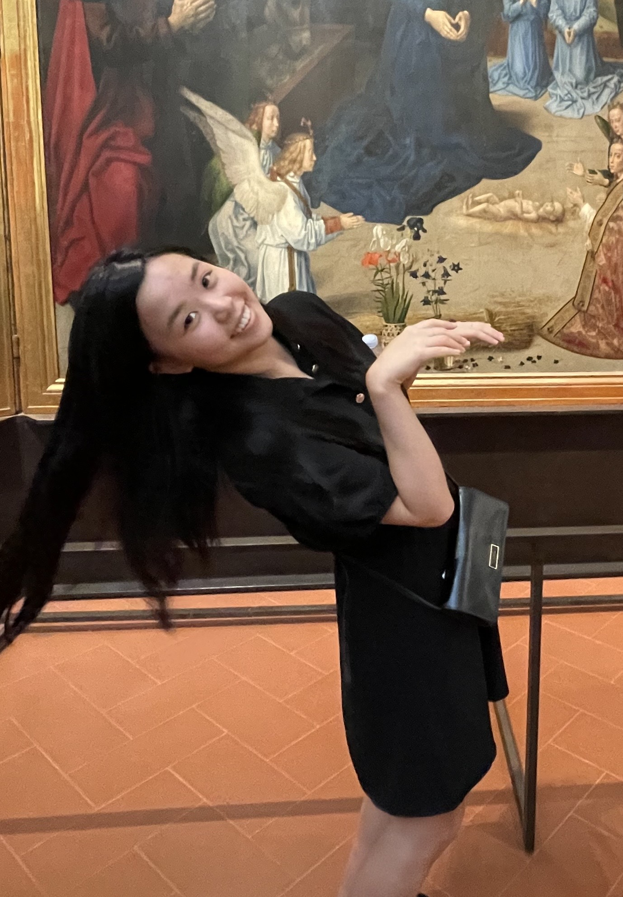

Catherine Li
About Me
 Hello! My name is Catherine Li.
I'm a third-year graduate student in math at UChicago. My advisors are Allen Yuan and Akhil Mathew.
I was previously an undergrad at Cornell.
As of now, I like homotopy theory and K-theory. Most recently I've been learning about trace methods, but I'm not sure what my specific interests are yet!
You can contact me at catli@uchicago.edu.
Notes and writing
I will upload some things here later.
Teaching
- Spring 2024: Abstract Linear Algebra (College Fellow)
- Winter 2024: Basic Algebra II (College Fellow)
- Autumn 2023: Point Set Topology (College Fellow)
- Summer 2023: REU mentor to three students